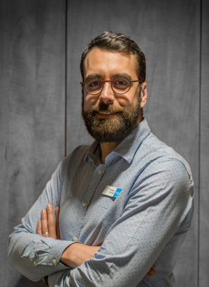

Pendant 16 ans, j'ai aidé des gens à mieux voir le monde. Aujourd'hui, je préfère le construire, ligne de code après ligne de code. Titulaire du TP Développeur Web et Web Mobile, je développe des applications web avec PHP 8.2 / Symfony 7.4 côté back-end, et HTML5 / CSS3 / JavaScript / Bootstrap 5 côté front.
Basé dans l'Ain (01), je cherche une équipe où la curiosité technique est aussi importante que la qualité du code. J'aime comprendre pourquoi ça marche, pas juste que ça marche.
Mon CVApplication web de commande en ligne pour un traiteur fictif, développée de A à Z dans le cadre de mon TP DWWM. Stack : Symfony 7.4, MySQL, MongoDB, Bootstrap 5. Fonctionnalités : commandes, avis clients, calcul de livraison via API, espace admin EasyAdmin, statistiques NoSQL.
Plateforme de covoiturage développée avec Symfony 7.3. Authentification par rôles, création et affichage de trajets, statistiques de visites en MongoDB, conteneurisation Docker. Projet d'école en cours de développement.
Disponible pour un poste de développeur web dans l'Ain, Lyon et ses alentours.
Me contacter